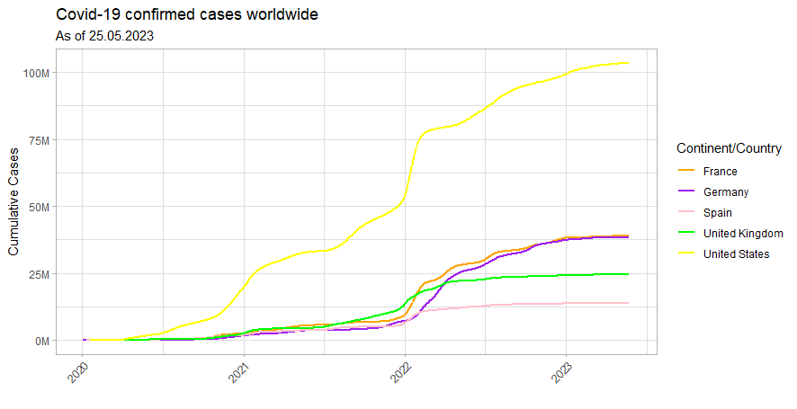
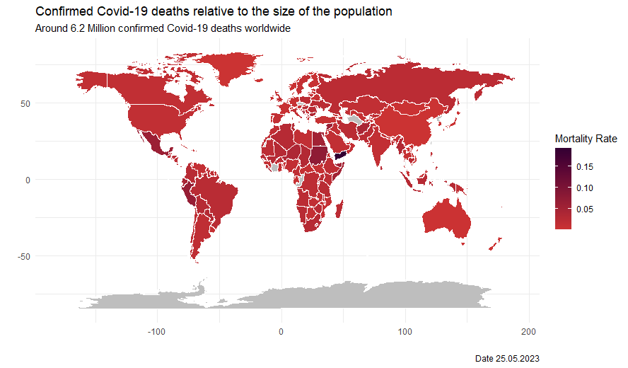

Data Visualization
1 First Question
1.1 Libraries
library(tidyverse)
library(vroom)
library(data.table)
library(tictoc)1.2 Read the Covid 19 data
covid_data_tbl <- read_csv("https://covid.ourworldindata.org/data/owid-covid-data.csv")1.3 Data Manipulation
Select desired countries for the plot.
selected_countries <- c("Germany", "United Kingdom", "France", "Spain", "United States")Create Plot tibble. Select necessary columns. Separate the date column and also create numeriv values for it, so it can be plotted. Also remove empty rows and unite the date again.
covid_plot_tbl <- covid_data_tbl %>%
select(continent,total_cases,date,location) %>%
relocate(continent,location,everything()) %>%
separate(col = date,
into = c("year", "month", "day"),
sep = "-", remove = FALSE) %>%
mutate(
year = as.numeric(year),
month = as.numeric(month),
day = as.numeric(day)
) %>%
unite(order_date_united, year, month, day, sep = "-", remove = FALSE) %>%
mutate(order_date_united = as.Date(order_date_united)) %>%
na.omit() %>%
filter(location %in% selected_countries)Calculate the cumulative cases per month for each country
cumulative_cases <- covid_plot_tbl %>%
group_by(location, order_date_united) %>%
summarise(cumulative_cases = sum(total_cases))Set colors for each country.
colors <- c("Germany" = "purple", "United Kingdom" = "green", "France" = "orange", "Spain" = "pink", "United States" = "yellow")
Create the line plot. here we use the geom_line and also the light theme in order to recreate the desired picture. Also we need to scale everything to 1 Million and add the label.
cumulative_cases %>%
ggplot(aes(x = order_date_united, y = cumulative_cases, color = location)) +
geom_line(size = 1) +
scale_color_manual(values = colors) +
theme_light()+
theme(axis.text.x = element_text(angle = 45, hjust = 1))+
scale_y_continuous(labels = scales::dollar_format(scale = 1/1e6,
prefix = "",
suffix = "M"))+
labs(
title = "Covid-19 confirmed cases worldwide",
subtitle = "As of 25.05.2023",
x = "",
y = "Cumulative Cases",
color = "Continent/Country"
)The result is shown below.  Apparently, the United States are taking off at some point.
{kind=link}
2 Second Question
2.1 Libraries
library(tidyverse)
library(dplyr)
library(maps)2.2 Read the Codid19 Data
And the world map data.
covid_data_tbl <- read_csv("https://covid.ourworldindata.org/data/owid-covid-data.csv")
world <- map_data("world")2.3 Data Manipulation
Rename the world data
world <- world %>%
rename(x = long, y = lat, id = region)Manipulate the covid data. Use default hints. Also select the necessary columns and remove empty rows.
covid_data_manipulated_tbl <- covid_data_tbl %>%
select(continent,location,total_cases,total_deaths,date) %>%
relocate(continent,location,everything()) %>%
mutate(location = case_when(
location == "United Kingdom" ~ "UK",
location == "United States" ~ "USA",
location == "Democratic Republic of Congo" ~ "Democratic Republic of the Congo",
TRUE ~ location
)) %>%
distinct() %>%
na.omit()Create new tibble for the mortality rate. Therefore we need to divide the total deaths by the total cases and group our results accordingly.
Mortality_rate_tbl <- covid_data_manipulated_tbl %>%
group_by(location) %>%
summarise(mortality_rate = sum(total_deaths)/sum(total_cases)) %>%
rename(id = location) %>%
ungroup()Then we merge everything together using the id.
plot_data <- merge(world, Mortality_rate_tbl, by.x = "id", by.y = "id", all.x = TRUE) %>% unique()Now we can plot everything using the geom_map. The colors should also fit the example. Also we need to add the labels.
plot_data %>% ggplot() +
geom_map(map = world,
aes(x = x, y = y, map_id = id, fill = mortality_rate),
color = "white", size = 0.1) +
scale_fill_gradient(low = "#CC3333", high = "#330033", na.value = "grey",
name = "Mortality Rate") +
theme_minimal() +
labs(
title = "Confirmed Covid-19 deaths relative to the size of the population",
subtitle = "Around 6.2 Million confirmed Covid-19 deaths worldwide",
x = "",
y = "",
fill = "",
caption = "Date 25.05.2023"
)
The result is shown below. 
{kind=link}